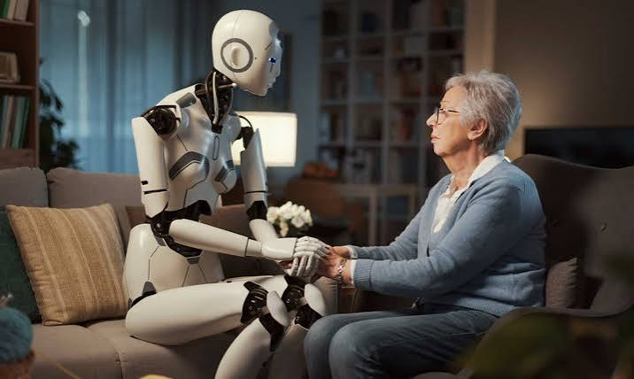

Interacción humano-robot (HRI)

La interacción humano robot es un campo de estudio multidisciplinario, enfocado en comprender, diseñar y evaluar cómo las personas y los sistemas robóticos se comunican, colaboran y conviven. El ecosistema tecnológico y social actual permite que los humanos y las máquinas ya no solo compartan tareas programadas, sino que coexistan de manera adaptativa. La relación física y operativa entre el usuario y la máquina define el canal y el diseño de esta disciplina. La interacción remota implica que el operador controla o supervisa al robot a distancia física o temporal; un ejemplo histórico son los vehículos exploradores espaciales, mientras que a nivel comercial abarca drones de rescate o robots de telepresencia médica.